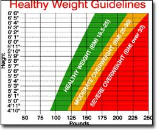

Wise Words On Weight
Understading why we gain weight, the pitfalls of doing so and how to safely loose weight and maintain a sensible lifestyle.
by Walter C. Willett, M.D.
August/September 2004
We are very pleased to launch this new nutrition column written by Walter C. Willett, M.D., chair of the Department of Nutrition at the Harvard School of Public Health. Dr. Willett is a widely respected, independent scientist who has devoted his career to studying the complex connections between what we eat and our long-term health. He has been a leader of one of the largest and longest running studies of nutrition and health, begun in 1976 and ongoing with 121,000 participants. Here is our first installment, from Eat, Drink and Be Healthy by Walter C. Willett, M.D., with P.J. Skerrett. Copyright © 2001 by the President and Fellows of Harvard College. Reprinted by permission of Free Press, a Division of Simon & Schuster, Inc., N.Y.
- Mother
Adding a few pounds here and there during adulthood seems innocuous enough. It has its own catchy moniker - middle-age spread - and was once considered a sign of prosperity and success. It also seems to be an inevitable part of aging, affecting most Americans. In reality, adult weight gain is neither inevitable, nor innocuous. In many cultures, gaining weight during adulthood just isn’t the norm.
Gaining more than a few pounds after your early 20s can nudge you down the path to chronic disease, and the more weight you gain, the harder the push will be. In two large, long-term Harvard studies, the Nurses’ Health Study and the Health Professionals Follow-up Study, middle-aged men and women who had gained 11 to 22 pounds after age 20 were up to three times more likely to develop heart disease, high blood pressure, type 2 diabetes and gallstones as their counterparts who gained 5 pounds or less.
Weight Gain Can Lead to Chronic Disease
Three related aspects of weight - how much you weigh in relation to your height, your waist size and how much weight you gain after your early 20s - increase your risk for:
• a heart attack, stroke or other type of cardiovascular disease
• high blood pressure, high choles- terol and diabetes
• post-menopausal breast cancer and cancer of the endometrium, colon or kidney
• snoring and sleep disorders such as sleep apnea
• adult-onset asthma
• arthritis, infertility and gallstones
Weight sits like a spider at the center of an intricate, tangled web of health and disease. It isn’t a new idea, it isn’t sexy, and it certainly won’t land me a spot as the next fad diet guru on Oprah, but next to whether you smoke, the number that stares up at you from the bathroom scale is the most important measure of your future health.
What Is a Healthy Weight?
The chart on Page 31 shows the current official USDA guidelines for what you should weigh, depending upon your height. The chart is based upon a measurement called the “body mass index” or BMI, which adjusts for the fact that taller people tend to weigh more than shorter people.
Unfortunately, these guidelines may be too generous. The panel members who set the guidelines in 2000 agreed that the risk of heart disease, diabetes and high blood pressure begins to climb at lower weights than the “Healthy Weights” shown on the chart. But they didn’t feel justified in choosing a lower cutoff between healthy and unhealthy weights because doing so would have labeled the majority of the U.S. population as overweight.
Almost everyone who falls into the “Moderate Overweight” section on the chart - except for extremely muscular body builders - would be healthier if they could reduce their weight, and even many people in the higher ranges of the “Healthy Weights” are not at their healthiest weight.
The bottom line is this: If you are in the “Healthy Weight” range, do everything you can to stay there. If your weight is above that range, you will do yourself a huge health favor by keeping it from getting larger and, if possible, bringing it down.
Why We Gain Weight
Your weight depends on a simple but easily unbalanced equation: Weight change equals calories in minus calories out. Burn as many calories as you take in and your weight won’t change. Chalk up your weight to a combination of what and how much you eat, your genes, your lifestyle and your culture.
Your diet. What and how much you eat affects your weight.
Genes. Your parents are partly to thank, or to blame, for your weight and the shape of your body. But genetic influences can’t explain the rapid increase in obesity seen in the United States over the last 30 years.
It’s possible that our prehistoric ancestors shaped our responses to food. Early humans routinely coped with feast-or-famine conditions. Eating as much as possible whenever food was available may have been a key to surviving the lean times. This means that complex chemical interactions between body and mind that evolved eons ago may drive us to eat whenever possible. In this era of plenty, that means all the time.
Lifestyle. If eating represents the pleasurable, sensuous side of the weight change equation, then metabolism and physical activity are its nose-to-the-grindstone counterparts. If you work a desk job and do little more than walk from your car to your office and back again, you may burn ridiculously few calories each day.
Culture. Ours is a culture of living large, of Texas-size appetites where quantity often edges out quality. Indulgence is tolerated, even revered. Just imagine your grandmother urging you to have another helping or the pleasurable groans and belt loosening that end many holiday and regular meals. These are not universal tendencies. In France and throughout much of Asia, the cuisine emphasizes quality and presentation, not how much food can be crammed on a plate.
On top of that, we have what I call the overproduction problem. U.S. farmers produce 3,800 calories’ worth of food a day for every man, woman and child in America. That’s almost double what the average person needs. The almost inevitable consequence of this surfeit is a system that encourages full-tilt consumption.
The food industry spends tens of billions of dollars a year learning the best ways to entice us, and then acting on that knowledge. The keen senses we have inherited for salt and sweetness that were once needed for survival (our taste for sweet things, for example, helped early humans sort through leaves to find the tender young ones with a ready supply of energy) are continually exploited. The sugar and salt content of products has been ratcheted up to increase our expectations for sweetness and saltiness, and to get us to eat, and buy, more. What’s more, food is sold everywhere.
Three Steps To Weight Control
Given the body’s seemingly innate tendency to gain weight, and the food temptations that bombard us, how can you avoid gaining weight, or lose it if you need to? I suggest a three-pronged strategy:
Become a defensive eater. Watching calories as we age involves more than just selecting certain types of foods or a particular diet. It also means learning how to avoid overeating. Here are a few suggestions:
• Practice stopping before you are stuffed. Recognize that we are victims of our culture, one that glorifies excess.
• Be selective. Don’t eat things just because they are put in front of you.
• Choose small portions. In restaurants, realize that portions are often oversized and that a single meal can contain your entire daily caloric allowance.
• Slow down and pay attention to your food when you eat. When you wolf down your food, you very effectively bypass the intricate set of “I’m full” signals that your digestive system is designed to generate.
Find a diet that works for you. If you read diet books or keep up with health and nutrition news, you’ve probably heard a lot about “fat calories” or “carbohydrate calories.” The idea that fat calories are different from carbohydrate calories came from studies done under extreme conditions, such as consuming pure carbohydrate, protein or fat. In a normal diet though, your body converts excess calories from all three kinds of food into fat at the same rate. Like a kiss or a rose, a calorie is a calorie. Fiddling with the form of calories doesn’t help you lose weight.
Almost any kind of diet can lead to weight loss, at least over the short term, because even the oddest diet makes people pay attention to how much they are eating. This mindfulness is often enough to limit daily calorie consumption, the single most important key to controlling weight. Most such fad diets fail in the long run. A good diet, though, helps you lose weight and maintain a lower weight for a long time.
The ultimate diet would be one that controls hunger, is pleasing and satisfying, meets the body’s needs for energy and nutrients, and minimizes the risk of chronic disease.
My recommendations are: 1) keep track of your calories and 2) follow the healthy eating guidelines at left.
Diets low in sugars, white flour and other refined carbohydrates are best, and a diet that borrows heavily from the Mediterranean and other traditional diets can offer a healthy nutritional foundation. Plenty of vegetables and whole grains and relatively little meat means a relatively low energy density. The abundance of vegetables and whole grains, as well as the relatively high percentage of fat (30 percent to 45 percent of calories, mainly from olive and other vegetable oils), makes for mild effects on blood sugar. Just as important, this type of diet is open to creative interpretation. You can incorporate cuisines from around the world, as well as your own creations, into an eating pattern with enough variety and pleasure to last a lifetime. (For more information on the Mediterranean diet, see “My Big, Healthy Greek Diet,” February/March 2004.)
Get moving. Other than not smoking, exercise is the single best thing you can do to get healthy or stay healthy, and keep chronic diseases at bay. Regular physical activity improves your chance of living longer and living healthier, helps prevent numerous diseases, including arthritis, heart disease and certain cancers, relieves symptoms of depression and controls weight.
Not too long ago, experts thought only vigorous exercise helped keep the heart and circulatory system in shape. Recent research has tempered that idea. We are learning that brisk walking offers many of the same benefits as sweating it out in a noisy gym.
Among women participating in the Nurses’ Health Study, there is a very strong link between walking and protection against heart disease - women who walked an average of three hours a week at a brisk pace were 35 percent less likely to have a heart attack over an eight-year period than women who walked infrequently. Brisk walking offers similar protection against diabetes.
Weight control isn’t impossible, nor does it need to mean deprivation or a boring, repetitious diet. With conscious effort and creativity, most people can successfully control their weight over the long term with an enjoyable but reasonable diet, and near-daily exercise. A longer, healthier life is definitely worth the effort.
Guidelines for Healthy Eating
Best Bets
• Daily exercise and weight control
• Whole grain foods at most meals
• Vegetables in abundance
• Fruits 2 to 3 times/day
• Plant oils (not hydrogenated)
In Moderation
• Nuts and legumes 1 to 3 times/day
• Fish, eggs, poultry 0 to 2 times/day
• Dairy or calcium supplement
• Alcohol 1 to 2 drinks/day (optional)
Eat Sparingly
• Saturated fats: red meat, butter
• Starches: white rice, white bread, potatoes, pasta
• Sweets
If you want clear, reliable advice on other nutrition issues, including the pros and cons of the Atkins, Zone, Glucose Revolution or other special diets, we highly recommend Dr. Willett’s book Eat, Drink, and Be Healthy. To order, see Page 111. - Mother
 The USDA?s official guidelines for healthy body weight (above) may be too generous. For optimum health you should try to stay at the low end of the Healthy Weight range (BMI of 18.5 to 22). For more on how to calculate your BMI, visit www.hsph.harvard.edu/cancer/materials/bmi.html. |
 |
|